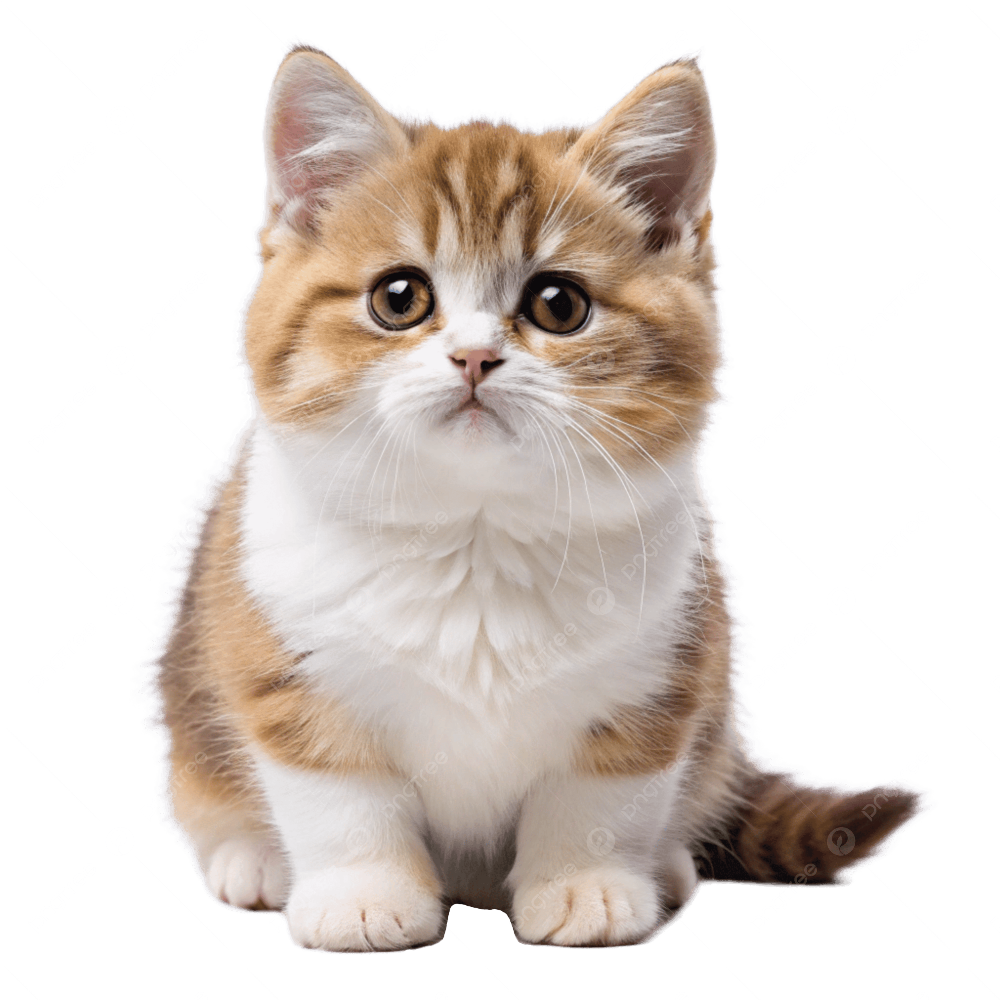
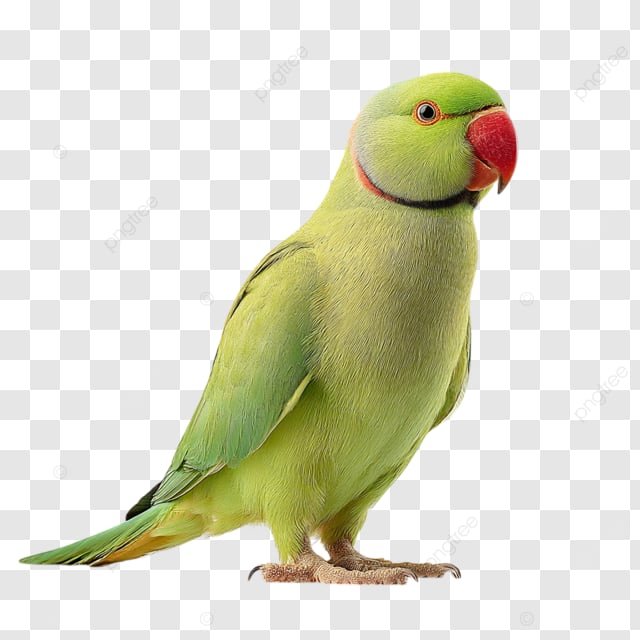

The Munchkin cat is a relatively modern breed distinguished by its notably short legs, a trait caused by a natural genetic mutation. Often referred to as the "sausage cat" or the feline version of a Dachshund, these cats are medium-sized with standard-length bodies, but stand only about 5 to 7 inches tall at the shoulder.

A "ringneck" typically refers to the Indian Ringneck Parrot (Rose-ringed Parakeet), a popular, intelligent, long-tailed green parrot known for the male's distinctive red and black neck ring, popular in the pet trade but also invasive in some areas, though the term also applies to other birds like the Australian Ringneck and ringneck snakes. These elegant birds are vocal, can mimic speech, and come in various color mutations, requiring significant commitment from owners.
